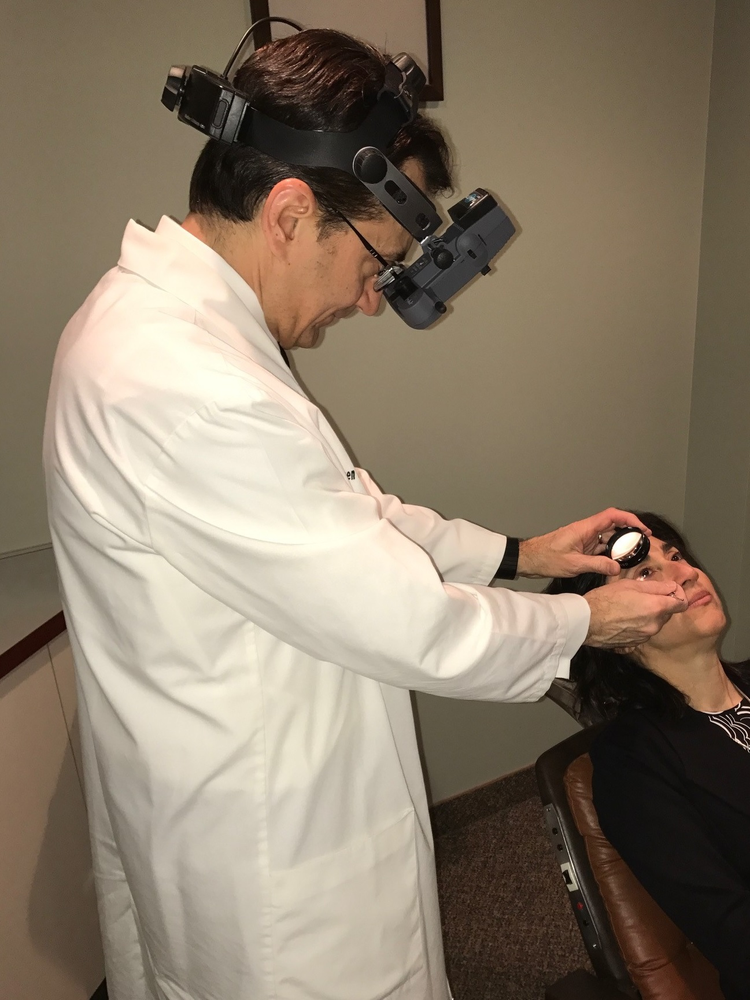
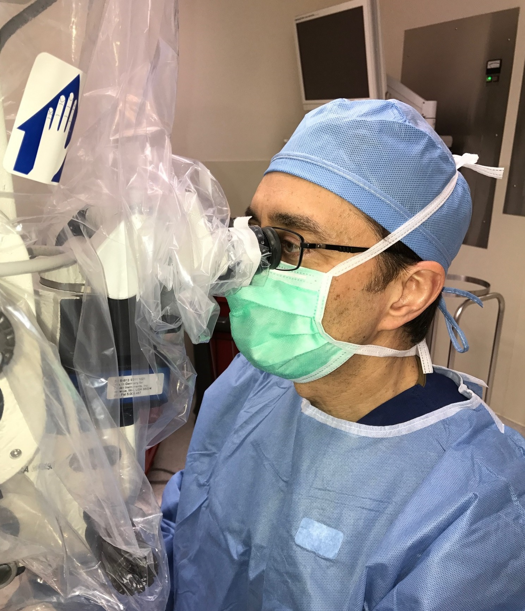

Examination
Early detection and treatment holds the best promise for treating many retinal disorders. This involves detailed examination, sophisticated testing, thorough explanations, and advanced medical and surgical treatments.
Comprehensive Examination includes detailed medical histories, visual function measurements, examination of the front of the eye, scleral depressed examination of the retina, contact lens examination, and directed physical examination.

Diagnostic Testing
Fundus Photography
Specialized digital cameras document abnormalities in the retina, essential for monitoring disease progression and treatment response.
Fluorescein & ICG Angiography
Intravenous diagnostic dye combined with high-definition digital retinal photography provides critical anatomic and functional information for diagnosis and treatment.

Optical Coherence Tomography
Infrared light scanning produces detailed cross-sectional images of the macula to aid diagnosis and treatment decisions.
Ocular Ultrasonography
High-frequency sound waves visualize the back of the eye when direct visualization is impaired by cataract or hemorrhage.
Visual Field Testing
Computer-controlled perimetry maps peripheral vision, providing useful information for diagnosing and monitoring certain disorders.
Visual Electrophysiology
ERG and EOG testing provide detailed information on retinal function, useful in retinitis pigmentosa, retinal dystrophies, and circulatory disorders.
Treatment
Medications
Certain retinal and vitreous diseases are treated with medications in eye drop form, pills, or injections into the eye.
Laser Surgery
Laser retinal surgery treats conditions including diabetic retinopathy, macular degeneration, retinal tears, retinal vein occlusions, and others — performed in-office.
Surgical Procedures
Outpatient surgical procedures are performed at local facilities. Most surgeries are performed at The Surgery Center, the area's first, most experienced physician-controlled multi-specialty ambulatory surgery center.
